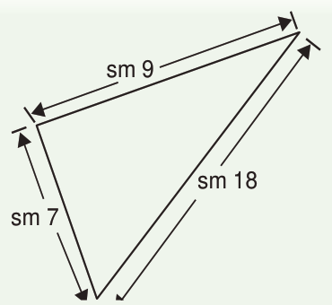
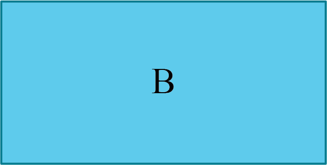

(d)sm 9sm 7sm 182.
Urefu wa upande mmoja wa mraba ni sm 23.Tafuta mzingo wa mraba huo.
3.
Bustani ya shule ina umbo la mstatili.Ikiwa urefu wa bustani hiyo ni m 120 na upana wa m 80, tafuta mzingo wake.
4.
Tafuta mzingo wa pembetatu iwapo kila upande una urefu wa sm 17.
5.
Tafuta mzingo wa mraba ambao upande wake una urefu wa m 16.
6.
Jamila alikimbia kuzunguka mara moja uwanja wenye urefu wa meta 100 na upana wa meta 70.Je, Jamila alikimbia umbali gani?
7.
Tafuta urefu wa kamba inayoweza kutumika kuzungushia dirisha lenye urefu wa meta 3 na upana wa meta 2.
8. A
A
Mzingo wa mraba A ni meta 4.Miraba A miwili inaunda mstatili B.Baraka alitafuta mzingo wa mstatili B akapata meta 8.Neema alitafuta mzingo wa mstatili B akapata meta 6.Je, nani alipata jibu sahihi?Toa sababu.
A
B